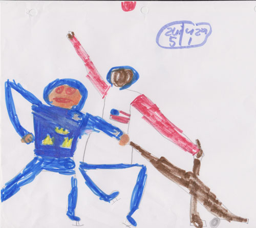

For as long as I can remember I've enjoyed expressing myself artistically. From the
hockey player illustrations
I'd draw in Kindergarten, to the work I'm proud to put forward in my portfolio today, I have always pushed myself to try new things and experiment within the visual arts. While my work is purely visual, I find great inspiration in music, particularily through bands such as Radiohead, The Talking Heads, LCD Soundsystem, and others in that vein.
While I spent a great deal of my childhood drawing and writing, my first real artistic endeavour was certainly in the first grade, when me and my friends Matthew and Stewart co-wrote and illustrated a cutting edge comic book series. A smash-hit at our elementary school, our books were put in the school library to be enjoyed by all. This was my first (and so far last) taste of true local fame. I continued to make very mediocre comics with my friends throughout a majority of elementary school.
Over the years I'd like to think the projects I've embarked on have matured content wise and improved in quality. I've taken an interest in surrealist and conceptual photography, UX and Web Design, as well as creating Motion Graphics, in particular for documentary-style videos. It wasn't until ninth grade that my interest in photography was piqued. I would spend hours wandering around downtown Ottawa, taking street photographs before touching them up in Lightroom and Photoshop. It didn't take long for me to start using Photoshop for more complex manipulations, which then progressed to me using sets of coordinated staged photos to create surrealistic images.
I've also become fascinated with not just creating photos and designs, but also with designing usable interfaces and properly working in images and content. My schooling at the University of Waterloo has given me a great opportunity to explore the ins and outs of UX Design, and for the purpose of advancing my skills (and also making this website) I taught myself HTML, CSS, and Javascript.
Each piece of personal art I make, be it a photo, a design, or something UX related is composed using my own resources I've created, or photos I've taken. I believe being able to oversee the entire creative process gives me as much control as possible and grants me the opportunity to ensure that each piece is the best it can be. I always try to make sure each image of mine contains a story, meaning or sentiment of it's own. However, for some commercial photos I have use royalty free stock photos at the request of the client.
But enough about me: contact me and tell me about you, a project you'd like to work on, or just for some general chit-chat!